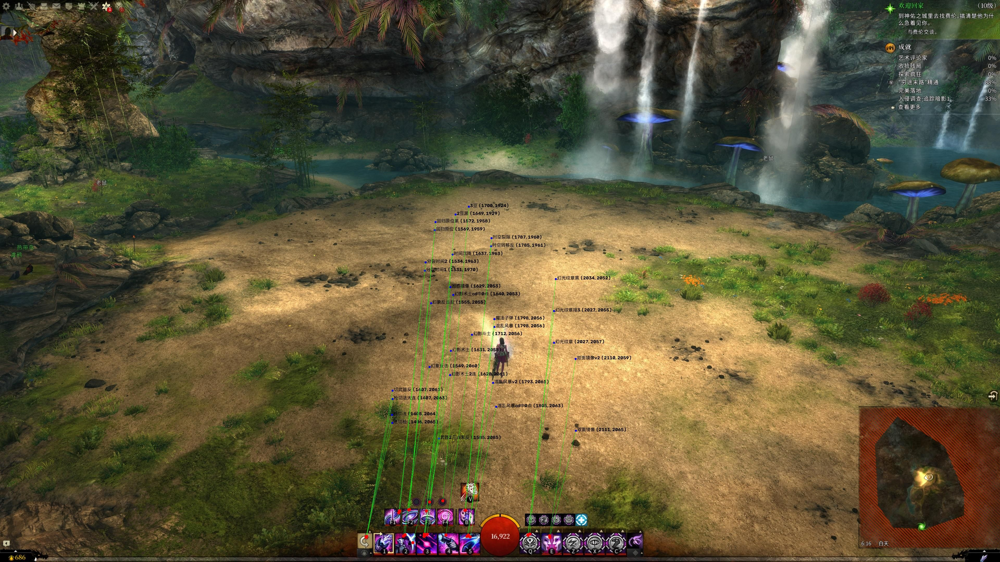

症状时空-赠与有缘人
|幻影斗士，幻影斗士=1=幻象反击反=时空裂隙=幻光纹章=枪切法大连，枪切法大连=1=幻光纹章接3，幻光纹章接3=1=混乱风暴v2，混乱风暴v2=1=双面镜像v2，双面镜像v2=1=双面镜像，幻光纹章=幻影术士2连，幻影术士cd中0点=混乱风暴，幻影术士2连=1=混乱风暴cd中0点=法切枪，切武器反=困惑镜像，幻象反击，切武器反=魔法子弹，幻影斗士=1=幻象反击反=枪切法，幻光纹章黑=幻影术士，幻影术士=1=混乱风暴cd中0点=法切枪|回归原位=1=2豆黑=双面镜像，3豆=时空转移反=武器2三点黑反=回归原位，3豆=时空转移反=回归原位黑=武器2三点黑反=分裂时间2，3豆=时空转移反=回归原位黑=武器2三点黑反=时间沉降，3豆=时空转移反=回归原位黑=武器2三点黑反=分裂时间1|
幻影斗士,4,598|幻象反击反,,,,,,,,,ifnot|时空裂隙,b|幻光纹章,q,916|枪切法大连,`,100,3,768,b,20,4,10,,,,,,,,,,,触发,0,,1|幻光纹章接3,q,416,f1,500,3,100,f3,388,,,,,,,,,,,触发,0,,1|混乱风暴v2,f1,50,5,260,f4,120,,,,,,,,,,,,,触发,0,,1|双面镜像v2,e,10,2,50,f2,275,b,50,,,,,,,,,,,触发,0,,1|双面镜像,e,10|幻影术士2连,3,788,q,916,3,488,4,300|幻影术士cd中0点|混乱风暴,5,481|混乱风暴cd中0点|法切枪,`,100,4,498,3,1875|切武器反,,,,,,,,,ifnot|困惑镜像,3,1875|幻象反击,2,20,2,20,2,20,2,552,,,,,,,,,,,触发,0,,1|魔法子弹,5,444|枪切法,`,100,3,188,4,600|幻光纹章黑|幻影术士,3,788,,,,,,,,,,,,,,,,,触发,0,,0,,,8400|回归原位,f2,200|2豆黑|3豆|时空转移反,,,,,,,,,ifnot|武器2三点黑反,,,,,,,,,ifnot|回归原位黑|分裂时间2,f1|时间沉降,f3|分裂时间1,f1
[&DQcBJRg9KDojDyMPawFrAYEBgQGDAYMB7RLtEgAAAAAAAAAAAAAAAAAAAAADWQBWADYAAA==]
毒蛇 陷阱师 节枪 法杖 恶魔渴求 阿奇姆 节枪起手
键位 F1 F2 F3 F4 B || 1 2 3 4 5 || Q E Z X C
软件版本 v1.78
【有较多的困惑伤害，比较适用的boss有 安卡、德斯米娜、德格达、凯玲、末世魔监工、厄拉等】
取色参考

评论列表（58）
奇怪的是，第二次F5也就是时空裂隙CD转好了之后不再释放F5了，开场能正常触发F5和F5的二段
@卡尔洛斯 大佬为什么我不会放f5
@卡尔洛斯 除了f5之外的技能都能放
大佬。请问起手F5快结束时，不放双面镜像和法杖2技能，等结束后才会放一轮双面和法杖2技能，其他一切正常（大概），是哪里除了问题啊？
分裂时间2是不是右上角是2的时候取色？
手长就是好啊，实战也不怎么掉伤害
好难啊 100w桩 +15灌注 打完43.7
混乱风暴V2 这个，跟随按键第二个5不释放，不知道为啥，5一直不释放也就不能CD种，最后也一直不能切武器，这个的取色很头疼
大佬能出个取色视频吗，都取色了循环不对
UP 我取完色之后 F1 F2 F3 一次都不放 为啥啊 要么就是放完一轮后就不放了
@huliu_sys 我也是不放F的技能
混乱风暴cd中0点是取那
这个太厉害了，0灌注，峰值75.7K，第一跳44.5K，结算41.8K。单易伤木桩。
想问下 碎层怎么处理转阶段的？
@方方方 这个不适合打碎层。碎层直伤你可以看看我发的魂兽（除了阿克需要手动灵活处理，别的都还可以），或者去找直伤时空，比较通用一些。症状推荐你去看看症状灾厄。
请教下 武器2 3点黑反 是指用完技能冷却的时候马上取3点位置的色吗？
@方方方 是的，你也可以取完位置，手动把颜色改成黑色 0x000000
双面镜像V2 怎么取色啊？ 是不是在法杖的时候取E技能？
@方方方 跟双面镜像一样，跟武器没关系
打到大概37血的时候会卡F技能，满豆了也不用F 要手动用是咋回事啊 大佬
@方方方 要手动F5 才恢复正常
@方方方 时空转移反 你这个取错了，这个不是取F5，是F5的二段
@优雅之殇 真的很强 就是老转阶段的话没法玩。 起跳高，400W 结算还有42K多
@方方方 我是用了第一次F技能之后，后续都不会释放，你是咋解决的
混乱风暴V2 取色5 为什么按键是F1啊？
@方方方 早点把f1放了，5在跟随里边
@优雅之殇 打到大概37血的时候会卡F技能，满豆了也不用F 要手动用是咋回事啊 大佬
@方方方 懂了 有个按键没改
@优雅之殇 跟随按键对了，在打到37血的时候还是不会释放F技能。不知道咋回事
给的图片啥意思？ 只取节枪颜色？
@动了动 示意图，只是给了个位置坐标。
幻光纹章接法杖3. 读条没读完就切节杖手枪去了。 导致没打出法杖3 请问我要怎么设置 是抬高纹章接3 的延迟还是？
@shawkk2i 打了法杖4 再打法杖3 导致时间差一点点。大佬请问如何调整
@shawkk2i 勾选连点试试
@不是大佬 勾选的
@shawkk2i 幻影术士2连弄成连点，幻光纹章接3 只在起手放一次，那个时候切武器还没cd完
@不是大佬 就是说把幻影术士2连的连点开启 关掉幻光纹章接3 的连点吗？
@shawkk2i 都开启
@不是大佬 好的 谢谢。我试试
@不是大佬 顺便问下 野外的话 特性要怎么点？
@不是大佬 目前野外我点的是 幻象123 混沌121 时空222 需要换哪个吗？
@shawkk2i 没研究过野外的，我野外只用丁真。你可以去星岬岛看看。
求大佬出个视频一步一步叫我们取色，取色太痛苦了，结果还是失败。
@萌新233 是不放技能还是哪块循环不对吗
取色取不明白，没有取色详细解释完全不行
打本不大合适 多动症 能来个症状灵刃吗
@13850868452 也就起手会闪两下
@优雅之殇 为什么前面打了两轮主循环后就不会用F12345技能了
@13850868452 只会不停切武器打武器循环 不用F2345了
@13850868452 时空转移反 你取对了吗 F5技能的二段
打多少,和m 大佬的区别大么
@圣光 3无=37~38k，普通食物扳手+13灌=43~44k

@优雅之殇 大佬 这个应该复制上面那个哦 2个都复制了 感觉不太对呢
@哇咔咔 复制啥
这个野外跟团打突破打汇聚能用吗
@林北 没试过，估计要改下bd装备啥的
@优雅之殇 野外穿天界的话bd要怎么改？